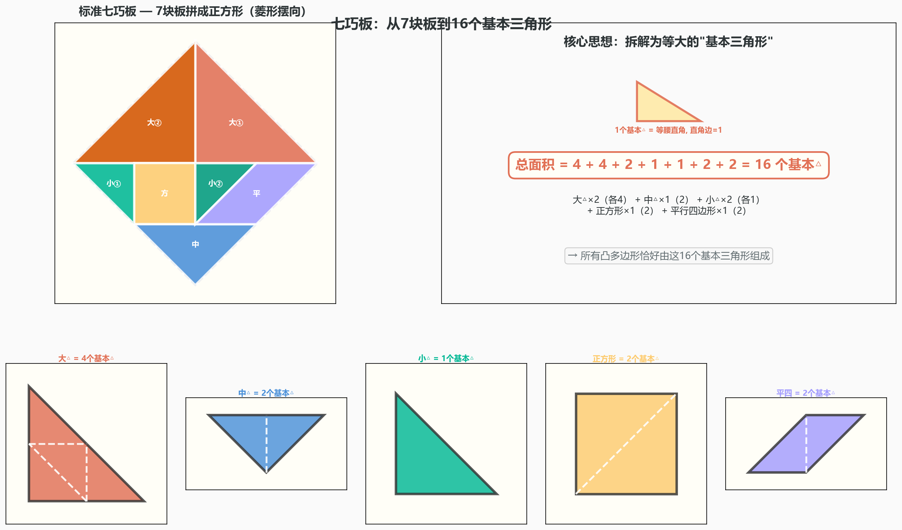
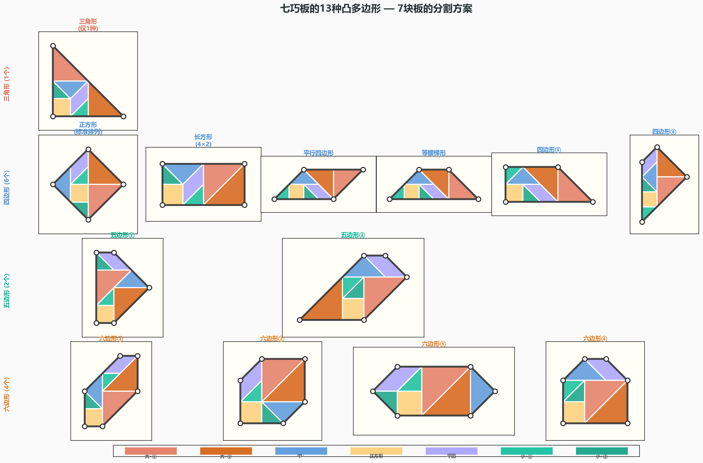
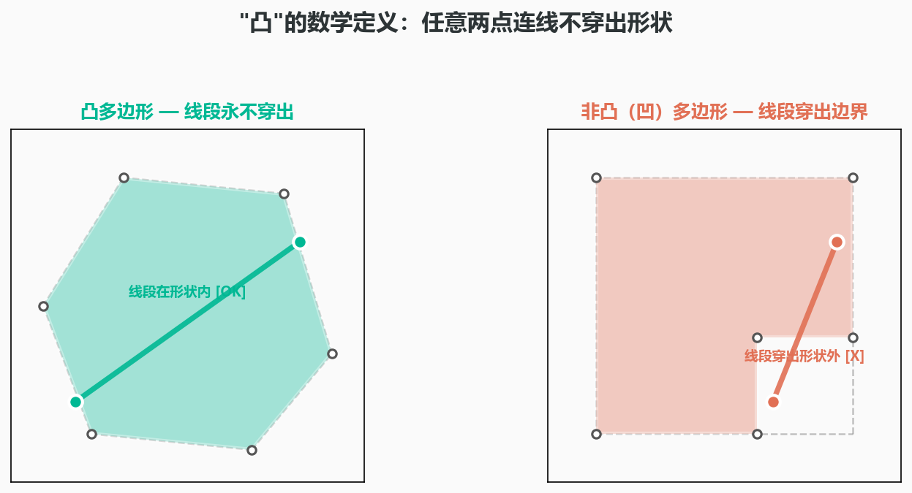

七巧板和它的13个秘密：一个1942年才被数学证明的真相
你玩过七巧板吗？
七块板——两块大三角形、一块中三角形、两块小三角形、一块正方形、一块平行四边形。把它们拼在一起，你可以拼出猫、人、房子、船只……想象力到哪里，形状就到哪。
这些问题都太大、太模糊了。数学家喜欢把问题问得很"窄"——窄到可以被精确回答。
1942年，两个中国数学家问了这样一个窄问题：
"用全部七块板，能拼出多少个不同的凸多边形？"
"凸"的意思很简单：你在这个形状的边界上任选两点，连接它们的线段永远不会跑到形状外面。三角形、正方形是凸的。五角星不是（你把两个尖角连起来，线段会穿出星形外）。
答案是13。
不是12，不是14——精确地13个。1个三角形，6个四边形，2个五边形，4个六边形。没有七边形，没有八边形。就只有这13个。
这13个形状，在一张纸、七块板的游戏里藏了上千年。直到1942年，才有人用数学严格地证明了它。

在开始之前，先搞清三件事
第一，在数学里，"凸"是一个很苛刻的条件。你随手拼的大多数七巧板造型都不是凸的——猫的耳朵戳出去，人的手臂伸出来。要求"凸"，等于要求在边界上没有凹进去的缺口。这个约束把无穷多种拼法缩到了一小撮。
第二，"用全部七块板"意味着总面积固定——16个"基本三角形"（把最小的那块当作1个单位）。所有凸多边形必须恰好由这16个基本三角形组成。你不能少用一块——少用一块就不是"全部七块板"了。
第三，王福春和熊全治在1942年证明13这个数字时，用的是最"笨"但也最可靠的方法——穷举。他们把七块板拆成16个等大的等腰直角三角形，然后穷举了所有可能的凸多边形排列。排除掉不能由实际七巧板块组合成的，剩下的——正好13个。
搞清楚了这三件事，你就会发现：七巧板不是随随便便的儿童玩具。它是一道组合几何的证明题，花了一千多年才被解出来。
一个千年谜题，和两个战时数学家
七巧板的起源已经很模糊了。主流的说法是宋朝（约公元1000年）就有了雏形——当时叫"燕几图"，用不同大小的方桌拼出宴会用的多种排列。到了明朝，演变成了"蝶几图"。清朝时定型为我们今天看到的样子——七块板，正方形的标准分割。
但长期以来，没有人从数学上认真审视过七巧板。它被当作消遣——一种打发时间的拼图游戏，和数学无关。
直到1942年。
此时的中国正处在抗日战争最艰难的时期。大学被迫内迁。浙江大学辗转到了贵州湄潭——一个偏僻的山间小镇。没有实验设备，没有充足的电力。教授们在破庙和祠堂里上课，学生们在草棚里做作业。
在这样艰苦的环境下，数学家王福春（Fu Traing Wang）和熊全治（Chuan-Chih Hsiung）把目光投向了一个看起来"无用"的问题：七巧板能拼出多少个凸多边形？
他们想出了一个聪明的办法：把所有7块板子拆解成16个等大的"基本三角形"。如果一个凸多边形能由七巧板拼成，它的边一定和基本三角形的边对齐——每条边都必须是"有理边"（沿着直角边方向）或"无理边"（沿着斜边方向）。
然后，他们干了一件很"暴力"的事：穷举。把所有可能的凸多边形边界列出来，逐一检查：这个多边形能不能被7块标准七巧板填满？
筛到最后——13个。多一个没有，少一个不是。
1942年11月，这篇论文发表在了美国的 The American Mathematical Monthly 上。题目很简单：A Theorem on the Tangram（《关于七巧板的一个定理》）。
今天回头看，这篇论文最妙的地方在于：它不需要微积分，不需要高深的拓扑。一个高中生就能完全理解它的证明框架——"把所有可能列出来，然后一个一个筛"。但把一个看似简单的问题问到底、算到底、证明到底——这种"数学意志力"，恰恰是最稀缺的。
13张脸：1个三角形、6个四边形、2个五边形、4个六边形

三角形（1个）：最大的那个——所有的七块板拼成一个大的等腰直角三角形。你可以把它看作七巧板的"终极简化版"。
四边形（6个）：这里面有我们最熟悉的正方形（七巧板的标准初始排列），还有一个长方形、一个平行四边形、一个等腰梯形，以及两种不规则的四边形。
五边形（2个）：这两个长得有点"奇怪"——像被咬了一口的四边形。但它们都是严格的凸五边形：5条边，每个内角都小于180°。
六边形（4个）：这是最让人惊讶的——七巧板能拼出凸六边形？还是4种？
而这就是全部的13个。没有七边形，没有八边形。王福春和熊全治证明了：凸的七巧板多边形最多只能有6条边。不是"还没找到"，而是"数学上不可能存在"。
什么是凸？——数学中的一个"分水岭"概念
想象一个橡皮筋绷在一个形状上。如果橡皮筋紧贴着形状的边界、没有悬空——这个形状就是凸的。如果橡皮筋在某处悬空了——形状在那里凹进去了。

凸意味着：你从这个形状里任选两点，线段永远在形状内部。
把"凸"作为一个约束条件加上去，无穷多种拼法一下子坍缩成了13种。这13种，就是七巧板这个"游戏引擎"在"凸多边形"这个数学定义下的全部输出。
一个孩子能在五分钟内体会到的，数学家花了上千年才证明
七巧板最奇妙的地方在于：一个五岁的孩子拿着它拼猫、拼房子——他正在被一个数学问题"暗中训练"。他可能一辈子不知道"凸"和"非凸"的区别，但他的大脑和手在每一次拼图时，都在处理这七块板的边界关系。
而今天，任何一个好奇心上来的孩子，花五分钟、拿起七巧板、把七块板拼成一个正方形——他就在触摸同一个数学问题。区别只是：他不知道，1942年，两个前辈已经替他算完了全部的答案。
想亲手试试？
- 拼一拼：找一副七巧板（或者用纸自己剪一套——5分钟内完成）。看看你能否拼出上面13种凸多边形中的一个。
- 数一数：你拼出的形状是几边形？如果是凸五边形——恭喜，你找到了13分之1。如果是凸六边形——更难，只有4种。
- 想一想：为什么没有凸七边形？你能证明吗？
你以为你在拼一只猫。其实，你在用16个基本三角形，探索组合几何的边界。而数学最安静的时刻就是：一个孩子拼对了13种凸多边形中的一种——他不懂1942年的证明，但他和那两个数学家，在同一个形状上，握手了。